UDN
Search public documentation:
ContentBrowserReferenceCH
English Translation
日本語訳
한국어
Interested in the Unreal Engine?
Visit the Unreal Technology site.
Looking for jobs and company info?
Check out the Epic games site.
Questions about support via UDN?
Contact the UDN Staff
日本語訳
한국어
Interested in the Unreal Engine?
Visit the Unreal Technology site.
Looking for jobs and company info?
Check out the Epic games site.
Questions about support via UDN?
Contact the UDN Staff
内容浏览器参考指南
概述
- 浏览游戏中的可找到的所有资源并进行交互处理: 已加载的资源和未加载的资源。
- 查找已加载和未加载的资源：
- Text Filter(文本过滤器): 通过输入名称、路径、标签或类型来查找资源。您可以在搜索关键字前使用前缀 '-'来从您的搜索中排除掉一些资源。
- Extended Filter(扩展的过滤器): 通过使用Object Type(对象类型)和/或相结合的标签来浏览资源。
- 添加频繁使用的Object Type(对象类型)到收藏夹中。
- 管理加载的和未加载的资源,不必再将资源从包中迁出。
- 创建标签。
- 应用标签到资源。
- 创建私有收藏夹并在其中存储资源以备将来使用。
- 创建共享收藏夹来和您的同事分享有趣的资源。
- 开发协助：
- 显示其中可能有问题的资源。
概念
- Tag(标签): 标签是一个您可以放在资源上的字符串。一个资源可以应用多个标签。标签使得在游戏中搜索资源变得更加的简单。标签的创建没有任何限制，它让用户来控制如何组织资源。
- My Collections(我的收藏夹): 收藏夹是您放置您的资源的地方。尽管每个资源的数据存在于一个包文件中，但一个资源可以存在于任何数量的收藏夹中。” My Collections(我的收藏夹)”是私有的；也就是它们仅对您是可见的。
- Shared Collections(共享收藏夹): 共享收藏夹和私有收藏夹的不同是：它们对您的团队中的任何人都是可见的。
 您可以把您的Content Browser(内容浏览器)中的资源看成是从左到右、从上到下依次排列的。资源是从 Sources Panel(源面板) 中选中的 sources(源) (收藏夹或包)中获得的。所获得的资源然后通过 Filter Panel(过滤器面板) 进行过滤。经过过滤后的资源显示在 Asset View(资源视图) 中以便进行查看。
您可以把您的Content Browser(内容浏览器)中的资源看成是从左到右、从上到下依次排列的。资源是从 Sources Panel(源面板) 中选中的 sources(源) (收藏夹或包)中获得的。所获得的资源然后通过 Filter Panel(过滤器面板) 进行过滤。经过过滤后的资源显示在 Asset View(资源视图) 中以便进行查看。
源
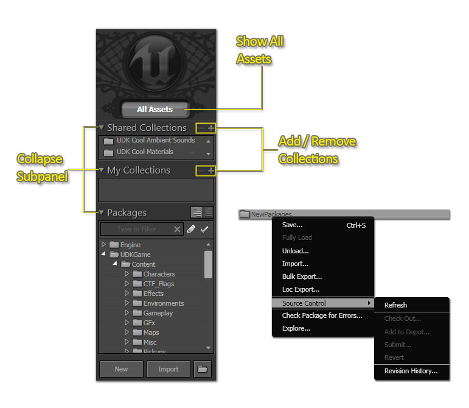
包视图
一般项目将涉及很多包。Packages View(包视图)提供了几个帮助您跟踪您当前正在处理的包的工具。 除了文本过滤器，您可以显示已经 修改 的包和当前 迁出 的包。
关联菜单参考指南
- Bulk Import(批量导入): 导入在指定目录路径中的所有文件，它通过在路径中的所有的目录结构中重复地执行导入动作来完成。这个工具可以自动地创建包和组，并且根据目录结构的布局把所有的文件放到正确的包中。请查看 批量导入页面来获取执行批量导入的说明。
过滤器面板

视图控制
| 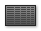 | Details List View |
| | 详细信息及缩略图： 水平分割 |
| 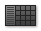 | 详细信息及缩略图： 垂直分割 |
| 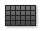 | 缩略图视图 |
| 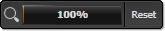 | 左/右拖拽改变缩放级别 |
| | 改变缩略图大小 |
| 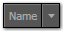 | 改变资源排序 |
标签面板
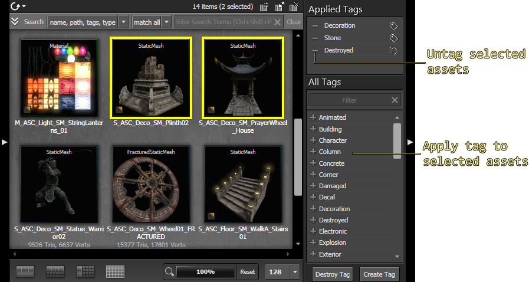
您可以通过点击 Create Tag(创建标签) 和 Destroy Tag(销毁标签) 按钮来创建或销毁标签。如果您想创建一个标签，可以点击 Create Tag(创建标签) 按钮并输入标签的名称即可。 如果您想删除一个标签，可以通过点击 Destroy Tag(销毁标签) 按钮来实现。你可以看到在标签附近的所有的'+'标记会变为'-'；这意味着如果您点击它们将会销毁标签。 注意： 为了防止没有经验的用户意外地销毁标签(随后从所有的资源上移除标签)，我们提供了一个安全设置。默认情况下，不允许用户创建或删除标签。您应该让您的美术指导和技术美工通过设置以下各项启用标签创建：- 在MyGameEditorUserSettings.ini文件中，添加一个[ContentBrowserSecurity]部分。
- 在这部分中，设置 bIsUserTagAdmin=True。
- 事实上，这不应该算作个安全系统 – 它仅用于防止人们意外地销毁数据。
标签组

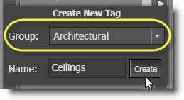
这些组也显示在您的标签过滤器中！
资源的添加时间跟踪

收藏夹复制和重命名
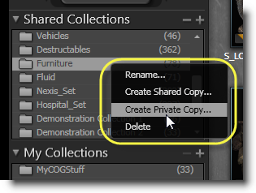
从搜索结果中排除选项

排序缩略图
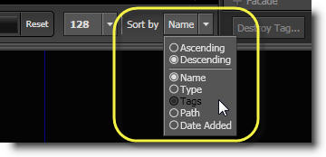
多个内容浏览器窗口
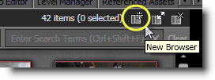
当在一个或多个浏览器中选中了资源，您将会在活动的选项周围看到一个实线的长方形而在其它的浏览器中则为虚线框。这使您知道哪个选项在动作(比如 Fill Property from Browser(从浏览器中填充属性) 等)中是有效的。
过滤器面板
文本过滤器
文本过滤器可以用于完成大部分过滤任务。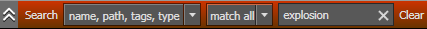
您可以通过添加更多的搜索条件来进一步精炼搜索结果。通过在搜索条件前使用'-'标记可以从搜索结果中排除和那个搜索条件匹配的选项。比如 "explosion dust -electric"将仅显示在 包或组名 、 标签 、 类型 或 资源本身的名称 中含有单词 'explosion' 和 'dust'但不含单词'electric'的资源。这项操作可以通过点击  | Name（名称） | 是否在资源的名称中执行搜索条件。比如，条件"expl"则可以在一个名称为"M_FX_ExplosionFramed_Alpha"的资源中找到 |
| Path(路径) | 是否在这个资源所存在的包或组的名称中执行搜索条件。注意启用这项将会返回很多结果。比如，资源"FX_VehicleExplosions.Materials.M_FX_ExplosionFramed_Alpha"将会匹配任何包含"vehi"、"expl"、"mat"、 "alpha"的项及很多其它的项。 | |
| Tags(标签) | 是否在应用到资源的标签中进行搜索。比如，一个标签为"Explosion"的资源将会匹配条件"Explosion" 及部分条件项比如"expl"。 | |
| Type(类型) | 是否在资源的类型中进行搜索。比如，任何粒子系统将匹配关键字"ParticleSystem"。 |
 | Match All（匹配所有） | 显示在任何选中的域(name(姓名)、 path(路径)、 tags (标签)或 type(类型))中包含每个指定条件项的资源。 |
| Match Any（任意匹配） | 显示在任何选中的域中包含一个或多个条件项的资源。 |
扩展的过滤器
扩展的过滤器面板可以在不需要进行任何输入的情况下进一步地过滤可见的资源。过滤器从左到右应用，所以改变过滤器左边的设置将会影响在右边的进行进一步过滤的选项。 在最左边的状态(status)过滤器控制了是否显示已加载的、未加载的、带标签的及无标签的资源。比如，如果您想查看当前加载的资源可以选择'Loaded(已加载)'项：
在最左边的状态(status)过滤器控制了是否显示已加载的、未加载的、带标签的及无标签的资源。比如，如果您想查看当前加载的资源可以选择'Loaded(已加载)'项：
 假如现在您想添加一些环境网格物体到一个关卡中。你可以从一个空的过滤器开始。
从 Object Type(对象类型) 栏中选择'Static Mesh(静态网格物体)'选项来仅查看 Static Meshes(静态网格物体) 。注意，每个标记旁边的编号已经进行了更新，反映了仍然有多少个具有那个标签的资源。例如，以 Character 为标签的资源的数量从10降低为1，以 Destroyed 为标签的数量从 7降低为6。
假如现在您想添加一些环境网格物体到一个关卡中。你可以从一个空的过滤器开始。
从 Object Type(对象类型) 栏中选择'Static Mesh(静态网格物体)'选项来仅查看 Static Meshes(静态网格物体) 。注意，每个标记旁边的编号已经进行了更新，反映了仍然有多少个具有那个标签的资源。例如，以 Character 为标签的资源的数量从10降低为1，以 Destroyed 为标签的数量从 7降低为6。
 选择'Deco(贴花)' 和'Scenery(景色)'标签来仅查看属于这两类标签的网格物体。注意下一个标签栏已经变为活动状态，并显示了进一步精炼的一组标签及更新后的资源的数量。
选择'Deco(贴花)' 和'Scenery(景色)'标签来仅查看属于这两类标签的网格物体。注意下一个标签栏已经变为活动状态，并显示了进一步精炼的一组标签及更新后的资源的数量。
 现在，选择'Building(建筑)' 和'Foliage(植被)'来查看属于建筑或植被的网格物体。最后的标签列表已经变为活动状态。
现在，选择'Building(建筑)' 和'Foliage(植被)'来查看属于建筑或植被的网格物体。最后的标签列表已经变为活动状态。

潜在问题过滤
隔离的资源
该标签中包括已经被开发者隔离的所有资源。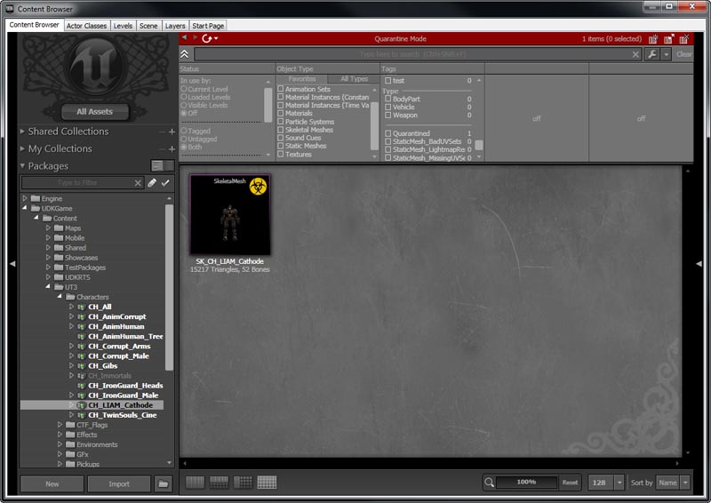
UV 集差强人意的静态网格物体
该标签中包括与 UV 坐标重叠的静态网格物体。这样有助于找出在尝试进行光照贴图时出现问题的网格物体。但是，这样做的目的在于一些网格物体可能想要共享同一个贴图空间以此来节省内存。 打开网格物体会看到其中一个 UV 集有重叠的坐标。
打开网格物体会看到其中一个 UV 集有重叠的坐标。

光照贴图分辨率为 0 的静态网格物体
该标签包括那些将其默认光照贴图分辨率设置为 0 的静态网格物体。这样有助于找出在尝试进行光照贴图时出现问题的网格物体。 打开网格物体会看到它的 LightMapResolution 被设置为 0。
打开网格物体会看到它的 LightMapResolution 被设置为 0。

缺少 UV 集的静态网格物体
该标签中包括没有第二个可以适用于光照贴图的唯一 UV 坐标的集合的网格物体。不过，这可能是内容创建人员故意这么做的，因为 UV 坐标的第一个集合可能已经专门用于进行光照贴图。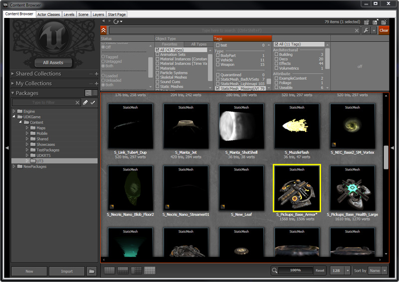
打开静态网格物体会看到它只有一个 UV 坐标集。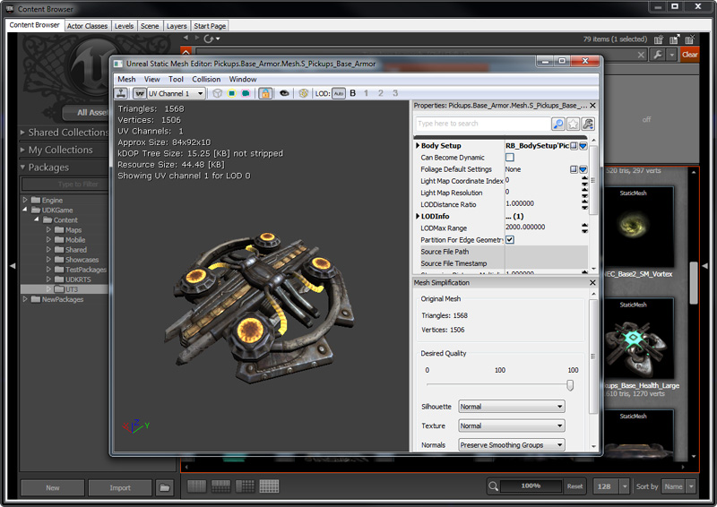
隔离模式
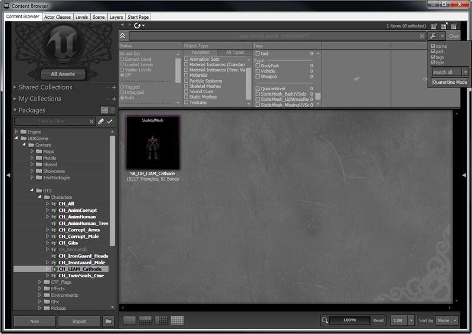
现在，内容浏览器就处于 Quarantine（隔离）模式了。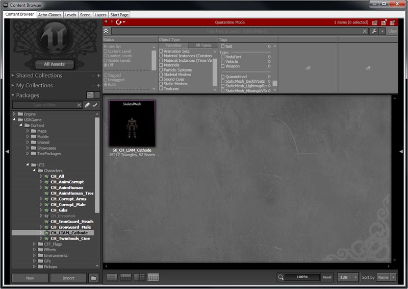
要隔离一个资源，那么右击这个资源调出关联菜单。左击 Toggle Quarantined（启用隔离）选择是否隔离它。您还可以使用 Ctrl+Q 作为键盘快捷方式执行这项操作。 现在将这个资源隔离了。
现在将这个资源隔离了。
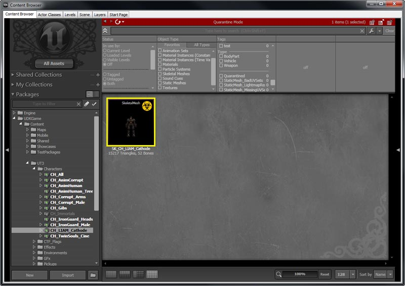
将内容浏览器切换回正常模式，现在会隐藏这个隔离的资源。 在您隔离资源完成后，接下来您可以使用删除隔离命令行开关自动并安全地删除这些资源。请参阅DeleteQuarantinedContentCommandlet了解更多有关这个命令行开关的信息。
在您隔离资源完成后，接下来您可以使用删除隔离命令行开关自动并安全地删除这些资源。请参阅DeleteQuarantinedContentCommandlet了解更多有关这个命令行开关的信息。
快捷方式参考
| 动作 /热键 | 效果 |
|---|---|
| Ctrl+Shift+F | 使焦点处于文本搜索的文本框内(从编辑器的任何地方) |
| RMB + Drag | 在缩略图视图中到处平移 |
| Space | 预览选中的资源(当前仅应用于声音) |
| Ctrl+A | 选择所有资源 |
| Ctrl+Shift+A | 设置源为所有资源 |
| Shift+点击在树状视图中的箭头 | 重复地展开/收缩 |
| B (按住) | 当B按钮押下时，可以放大在资源缩略图周围的带颜色边界框 |